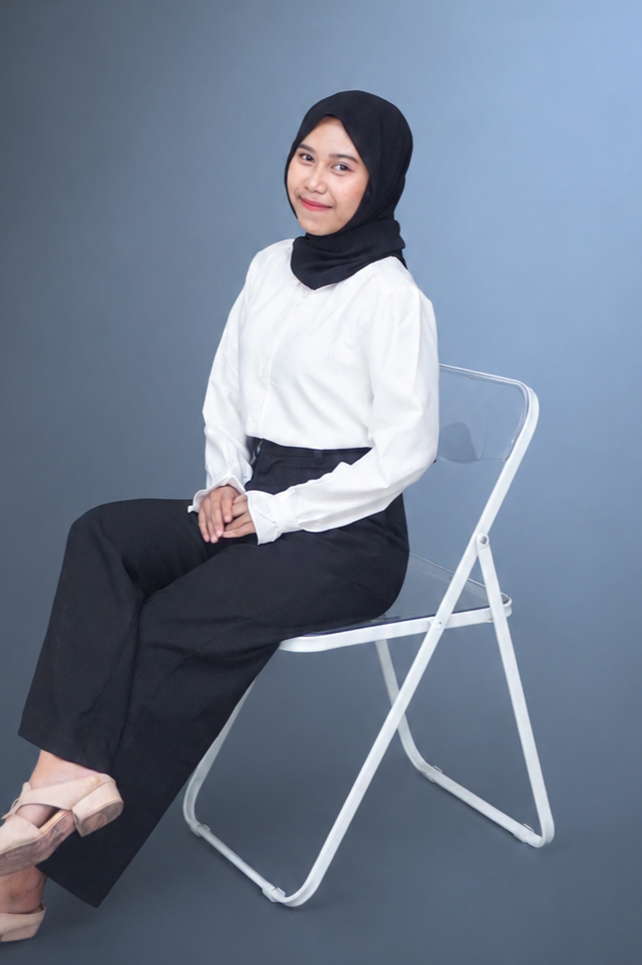

S1 Manajemen
Universitas Airlangga
Menempuh pendidikan sarjana Manajemen.
Halo, saya
Mahasiswa Manajemen · Universitas Airlangga
Tertarik pada pengelolaan sistem, strategi, dan pengembangan organisasi. Berpengalaman sebagai sekretaris organisasi, panitia kegiatan, MC, dan voice over talent.

Tentang
Saya Prima Silvi, mahasiswa S1 Manajemen Universitas Airlangga yang tertarik pada pengelolaan sistem, strategi, dan pengembangan organisasi. Saya berpengalaman sebagai sekretaris organisasi dan panitia kegiatan, dengan kemampuan mengelola administrasi, data, serta koordinasi program kerja.
Pengalaman public speaking sebagai MC, voice over talent, news anchor, dan peserta debat membentuk kemampuan komunikasi, berpikir kritis, serta pemecahan masalah yang efektif.
Keahlian
Pengalaman
Universitas Airlangga
Menempuh pendidikan sarjana Manajemen.
Kegiatan Sekolah
Jurusan IPS
Proyek Mandiri
Mengembangkan website portofolio pribadi berbasis HTML, CSS, dan Bootstrap untuk mendokumentasikan pengalaman organisasi, prestasi, dan proyek secara digital.
Organisasi Sekolah
MC, Voice Over, Debat
Prestasi
Universitas Indonesia
Universitas Bojonegoro
Bintang Pelajar & Dinas Pendidikan Provinsi
Olimpiade Sains Nasional
Kontak
Tertarik bekerja sama atau ingin berdiskusi? Silakan hubungi saya melalui form atau kontak berikut.